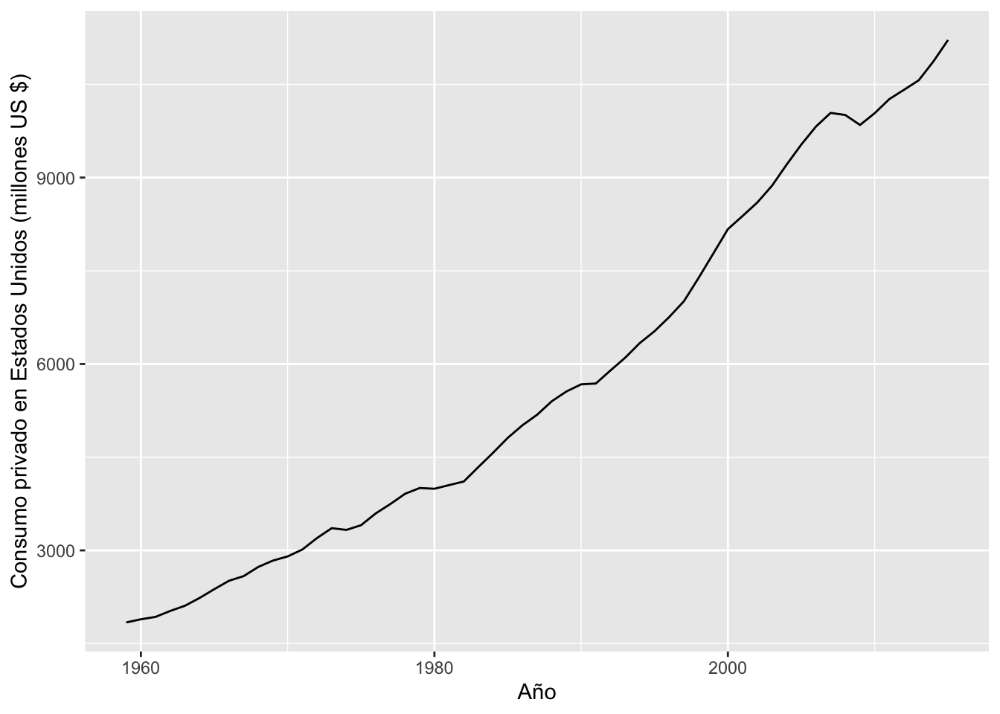
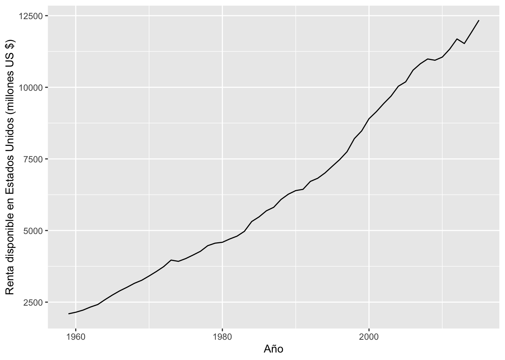
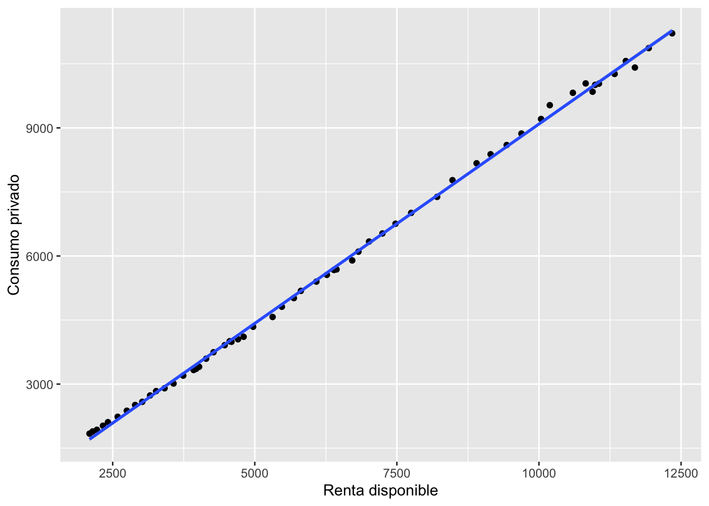
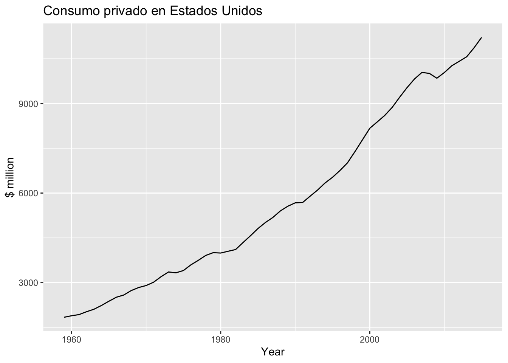
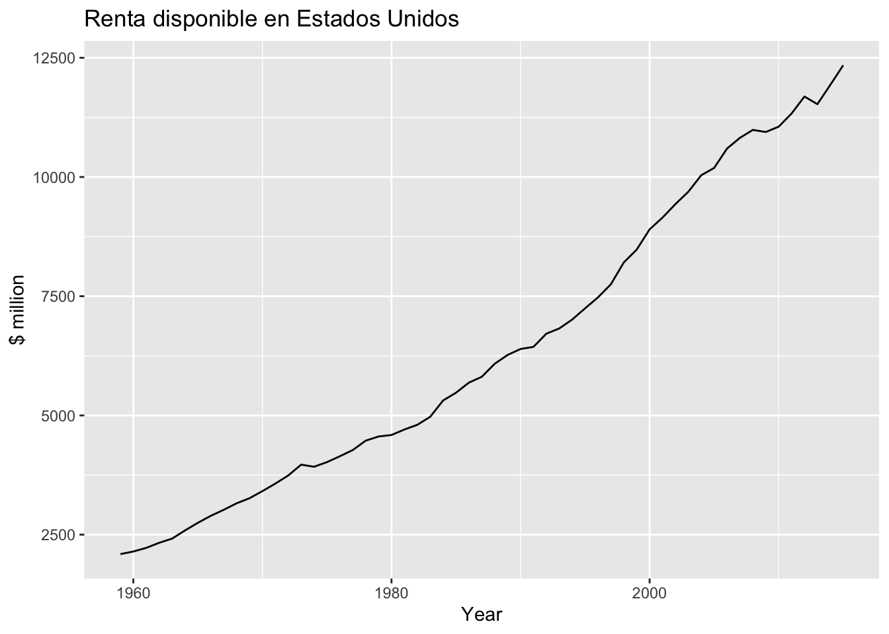
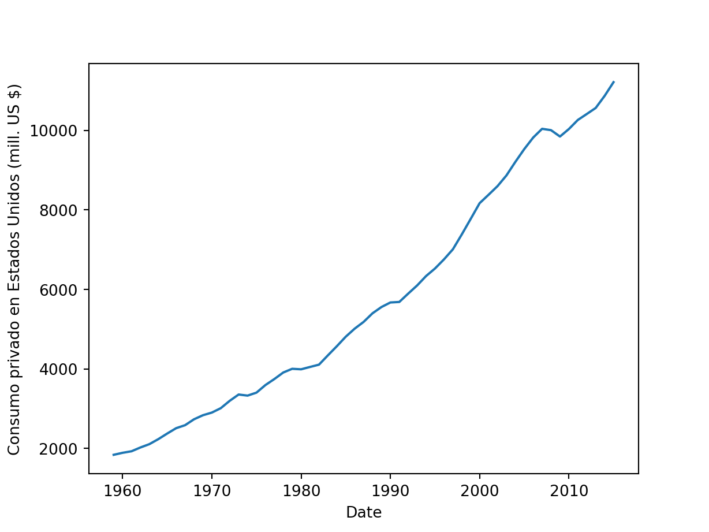
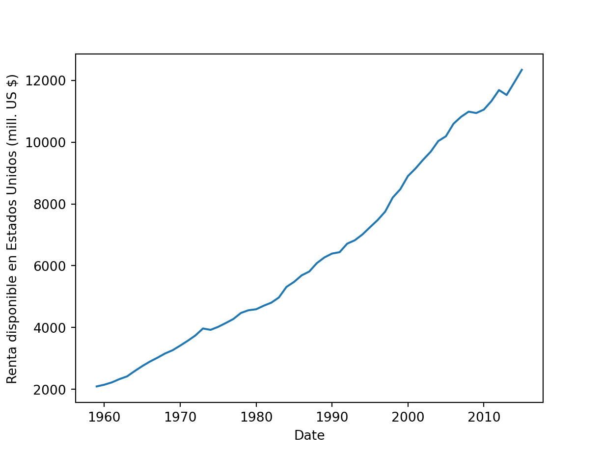
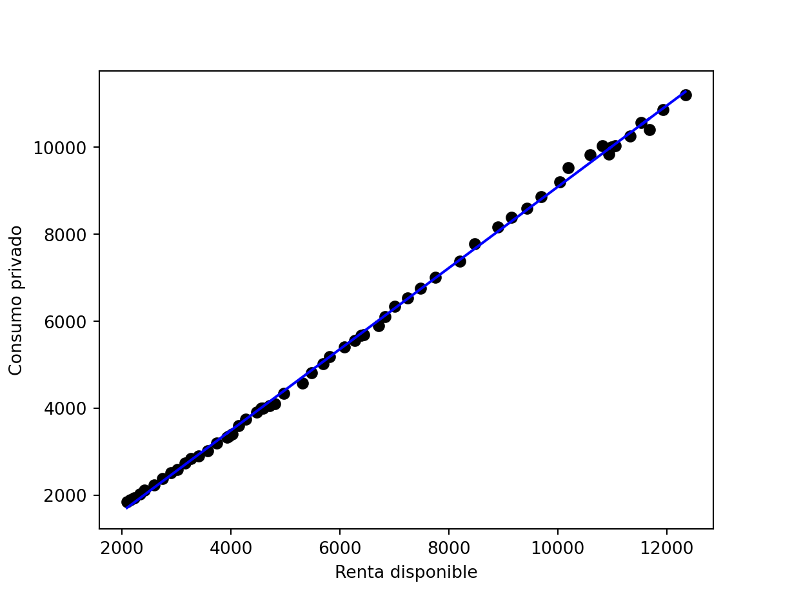

Aplicación 1.5 (Regresiones con datos de series temporales): Consumo privado en Estados Unidos
En esta aplicación se estimará una función de consumo de tipo Keynesiano agregada (consumidor representativo), usando datos de series temporales para Estados Unidos del período 1959-2015:
\[C_{t} = \beta_0 + \beta_1 Y_{t} + e_{t}\]
donde \(C\) representa la consumo privado, e \(Y\) es la renta disponible neta (después de impuestos).
Desde el punto de vista técnico, el objetivo principal del ejemplo es la introducción de las principales funciones y librerías especializadas de R y Python para el análisis de series temporales.
Código R
# Lectura de librerías
library(tidyverse)
# Lectura de datos
CONS_USA <- read_delim("data/CONS_USA_ts.csv", delim = ";")
head(CONS_USA)# A tibble: 6 × 3
date C Y
<date> <dbl> <dbl>
1 1959-01-01 1840. 2092.
2 1960-01-01 1891 2147
3 1961-01-01 1930. 2223.
4 1962-01-01 2025. 2329
5 1963-01-01 2109. 2417.
6 1964-01-01 2234. 2588.tail(CONS_USA)# A tibble: 6 × 3
date C Y
<date> <dbl> <dbl>
1 2010-01-01 10036. 11055.
2 2011-01-01 10264. 11331.
3 2012-01-01 10413. 11688.
4 2013-01-01 10565. 11528.
5 2014-01-01 10869. 11931
6 2015-01-01 11215. 12343.# Asignación del formato de series temporales
# (https://cran.r-project.org/web/views/TimeSeries.html)
# Aquí se usará la clase básica "ts", válida para series temporales
# regulares (espaciadas de forma homogénea en el tiempo).
# Pueden usarse otras clases más generales, siendo las más usadas:
# "zoo": https://cran.r-project.org/web/packages/zoo/index.html
# "xts": https://github.com/joshuaulrich/xts
# "tsibble": https://github.com/robjhyndman/fpp3package
# Ver anexo para una demostración sobre el tidyverts,
# el complemento al tidyverse para el análisis de series temporales.
#
ts_CONS_USA <- ts(CONS_USA[,2:3], start=c(1959), end = c(2015))
#
# Estadística descriptiva
summary(ts_CONS_USA) C Y
Min. : 1840 Min. : 2092
1st Qu.: 3330 1st Qu.: 3924
Median : 5184 Median : 5811
Mean : 5747 Mean : 6418
3rd Qu.: 8383 3rd Qu.: 9149
Max. :11215 Max. :12343 # Gráficas
g1 <- ggplot(data = CONS_USA, aes(x = date)) +
geom_line(aes(y = C)) +
labs(y = "Consumo privado en Estados Unidos (millones US $)", x = "Año")
g1
g2 <- ggplot(data = CONS_USA, aes(x = date)) +
geom_line(aes(y = Y)) +
labs(y = "Renta disponible en Estados Unidos (millones US $)", x = "Año")
g2
# Diagrama de puntos con línea de regresión
g3 <- ggplot(CONS_USA, aes(x = Y, y = C)) +
geom_point() +
stat_smooth(method = lm) +
labs(x = "Renta disponible",y = "Consumo privado")
g3
# Regresión por MCO
KEYNES_model <- lm (formula = C ~ Y, data = ts_CONS_USA)
summary(KEYNES_model)
Call:
lm(formula = C ~ Y, data = ts_CONS_USA)
Residuals:
Min 1Q Median 3Q Max
-252.922 -52.961 -6.074 55.160 263.545
Coefficients:
Estimate Std. Error t value Pr(>|t|)
(Intercept) -2.455e+02 2.828e+01 -8.681 6.87e-12 ***
Y 9.336e-01 3.967e-03 235.338 < 2e-16 ***
---
Signif. codes: 0 '***' 0.001 '**' 0.01 '*' 0.05 '.' 0.1 ' ' 1
Residual standard error: 92.95 on 55 degrees of freedom
Multiple R-squared: 0.999, Adjusted R-squared: 0.999
F-statistic: 5.538e+04 on 1 and 55 DF, p-value: < 2.2e-16# ANEXO: La librería fpp3 y el tidyverts' (https://tidyverts.org/)
# La macro-librería `fpp3` contiene varias librerías específicas
# y otras generales, como `tidyverse` y `lubridate`.
# La clase `tsibble` proporciona una infraestructura de datos para ordenar
# y manipular series temporales. Se pueden encontrar los detalles en la
# página web https://tsibble.tidyverts.org/index.html.
# Toda la información de la librería fpp3 se encuentra en:
# https://github.com/robjhyndman/fpp3package.
# El libro de texto que acompaña a esta librería es el siguiente:
# FORECASTING: PRINCIPLES AND PRACTICE -> https://otexts.com/fpp3/.
#
# NOTA:
# Existen otras librerías especializadas en el análisis de series temporales,
# como `TSstudio` (https://ramikrispin.github.io/TSstudio/),
# `timetk` (https://business-science.github.io/timetk/) o
# `tsbox`(https://docs.ropensci.org/tsbox/).
#
library(fpp3)
# Creación del objeto tsibble
CONS_USA_ts <- CONS_USA[,2:3] %>%
mutate(Year = 1959:2015) %>%
as_tsibble(index = Year)
# Gráficas individuales
CONS_USA_ts %>% autoplot(C) +
ggtitle("Consumo privado en Estados Unidos") +
ylab("$ million") + xlab("Year")
CONS_USA_ts %>% autoplot(Y) +
ggtitle("Renta disponible en Estados Unidos") +
ylab("$ million") + xlab("Year")
# Diagrama de puntos junto con la recta de regresión estimada
CONS_USA_ts %>%
ggplot(aes(x=Y, y=C)) +
ylab("Consumo") +
xlab("Renta") +
geom_point() +
geom_smooth(method="lm", se=FALSE)
# Regresión por MCO
CONS_USA_ts %>%
model(tslm = TSLM(C ~ Y)) %>%
report()Series: C
Model: TSLM
Residuals:
Min 1Q Median 3Q Max
-252.922 -52.961 -6.074 55.160 263.545
Coefficients:
Estimate Std. Error t value Pr(>|t|)
(Intercept) -2.455e+02 2.828e+01 -8.681 6.87e-12 ***
Y 9.336e-01 3.967e-03 235.338 < 2e-16 ***
---
Signif. codes: 0 '***' 0.001 '**' 0.01 '*' 0.05 '.' 0.1 ' ' 1
Residual standard error: 92.95 on 55 degrees of freedom
Multiple R-squared: 0.999, Adjusted R-squared: 0.999
F-statistic: 5.538e+04 on 1 and 55 DF, p-value: < 2.22e-16Código Python
# Lectura de librerías
import numpy as np
import pandas as pd
import matplotlib.pyplot as plt
import statsmodels.formula.api as smf
# Lectura de datos
# (al introducir la opción index_col se está asignando en este caso
# de forma implícita un formato temporal para el resto de columnas)
CONS_USA = pd.read_csv("data/CONS_USA_ts.csv", delimiter=';', index_col=0)
#
# Asignación del formato temporal
# (https://pandas.pydata.org/docs/user_guide/timeseries.html)
# Un análisis detallado puede encontrarse en la siguiente página web:
# https://jakevdp.github.io/PythonDataScienceHandbook/
# 03.11-working-with-time-series.html
ts_CONS_USA = pd.read_csv("data/CONS_USA_ts.csv", delimiter=';',
parse_dates=['date'], index_col='date')
ts_CONS_USA.head() C Y
date
1959-01-01 1840.5 2092.1
1960-01-01 1891.0 2147.0
1961-01-01 1929.9 2222.7
1962-01-01 2025.4 2329.0
1963-01-01 2108.8 2416.6ts_CONS_USA.tail() C Y
date
2011-01-01 10263.5 11331.3
2012-01-01 10413.2 11687.8
2013-01-01 10565.4 11527.6
2014-01-01 10868.9 11931.0
2015-01-01 11214.7 12343.2# Estadística descriptiva
ts_CONS_USA.describe() C Y
count 57.000000 57.000000
mean 5746.605263 6418.347368
std 2924.557484 3131.033192
min 1840.500000 2092.100000
25% 3329.500000 3923.900000
50% 5183.600000 5811.100000
75% 8382.600000 9148.800000
max 11214.700000 12343.200000# Gráficas
plt.plot(ts_CONS_USA["C"])
plt.xlabel("Date")
plt.ylabel("Consumo privado en Estados Unidos (mill. US $)")
plt.show()
plt.plot(ts_CONS_USA["Y"])
plt.xlabel("Date")
plt.ylabel("Renta disponible en Estados Unidos (mill. US $)")
plt.show()
# Diagrama de puntos con línea de regresión
reg = smf.ols(formula = "C ~ Y", data = ts_CONS_USA)
res = reg.fit()
plt.scatter(ts_CONS_USA["Y"], ts_CONS_USA["C"], color = "black")
plt.plot(ts_CONS_USA["Y"], res.fittedvalues, color = "blue")
plt.xlabel("Renta disponible")
plt.ylabel("Consumo privado")
plt.show()
# Regresión por MCO
model = smf.ols(formula = "C ~ Y", data = ts_CONS_USA)
KEYNES_model = model.fit()
print(KEYNES_model.summary()) OLS Regression Results
==============================================================================
Dep. Variable: C R-squared: 0.999
Model: OLS Adj. R-squared: 0.999
Method: Least Squares F-statistic: 5.538e+04
Date: Tue, 14 Nov 2023 Prob (F-statistic): 2.72e-84
Time: 20:15:53 Log-Likelihood: -338.19
No. Observations: 57 AIC: 680.4
Df Residuals: 55 BIC: 684.5
Df Model: 1
Covariance Type: nonrobust
==============================================================================
coef std err t P>|t| [0.025 0.975]
------------------------------------------------------------------------------
Intercept -245.5102 28.282 -8.681 0.000 -302.189 -188.832
Y 0.9336 0.004 235.338 0.000 0.926 0.942
==============================================================================
Omnibus: 2.088 Durbin-Watson: 0.691
Prob(Omnibus): 0.352 Jarque-Bera (JB): 1.264
Skew: 0.240 Prob(JB): 0.532
Kurtosis: 3.549 Cond. No. 1.64e+04
==============================================================================
Notes:
[1] Standard Errors assume that the covariance matrix of the errors is correctly specified.
[2] The condition number is large, 1.64e+04. This might indicate that there are
strong multicollinearity or other numerical problems.# ANEXO: Clases de modelos y funciones específicas de la librería
# `statsmodels` para el análisis de series temporales
# (https://www.statsmodels.org/stable/tsa.html)
#
from statsmodels.tsa.api import ARDL
endog = ts_CONS_USA[["C"]]
exog = ts_CONS_USA[["Y"]] # exogs = data[["X2", "X3",...]]
model = ARDL(endog, 0, exog, 0) # retardos=0 equivale a mod. estático
KEYNES_ardl_model = model.fit()
print(KEYNES_ardl_model.summary()) ARDL Model Results
==============================================================================
Dep. Variable: C No. Observations: 57
Model: ARDL(0, 0) Log Likelihood -338.189
Method: Conditional MLE S.D. of innovations 91.304
Date: Tue, 14 Nov 2023 AIC 682.377
Time: 20:15:54 BIC 688.506
Sample: 01-01-1959 HQIC 684.759
- 01-01-2015
==============================================================================
coef std err z P>|z| [0.025 0.975]
------------------------------------------------------------------------------
const -245.5102 28.282 -8.681 0.000 -302.189 -188.832
Y.L0 0.9336 0.004 235.338 0.000 0.926 0.942
==============================================================================